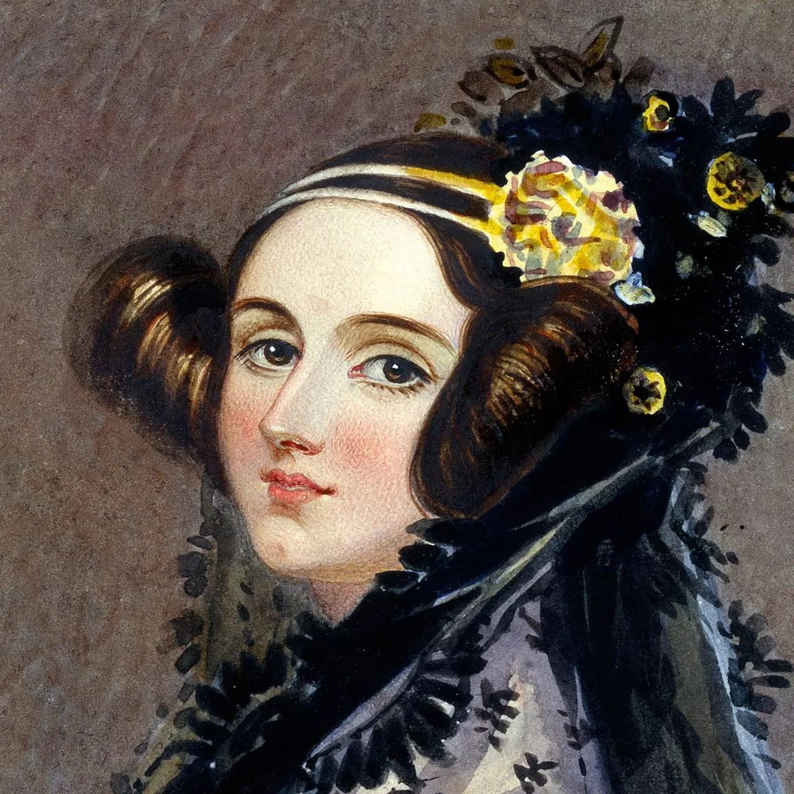

Ada Lovelace
As Linguagens de Programação são conjuntos de regras padronizadas por sintaxe e semântica, utilizadas para criar programas através de instruções. Elas foram criadas com o objetivo de facilitar a interação entre humanos e computadores, tornando-se uma ferramenta importante, produtiva e eficiente para os programadores.
Mas o que define uma linguagem de programação? Essa pergunta possui múltiplas respostas, sendo a mais básica o conjunto de regras que traduz e executa um programa escrito. Esses programas são chamados de Processadores de Linguagem. Um exemplo de processador é o Compilador, que recebe um arquivo, processa-o e retorna um arquivo executável. Existem diversos tipos de linguagens de programação, desde aquelas criadas para auxiliar os programadores até aquelas destinadas apenas a fins educacionais.
A história da linguagem de programação conta com diversos nomes que estabeleceram as bases do que consideramos código nos dias atuais. Um dos mais importantes é o da Primeira Linguagem de Programação, criada por Ada Lovelace em 1843. Ada utilizou papel para escrever o primeiro algoritmo para um computador, uma vez que não existiam máquinas naquela época. Desde então, muitas linguagens de programação foram desenvolvidas e utilizadas para diferentes propósitos.

Em resumo, aqui estão outros grandes nomes da história da computação: Grace Hopper, que criou o primeiro compilador em 1952; John McCarthy, criador da linguagem Lisp em 1958, amplamente utilizada na área de pesquisa em ciência da computação; e Kristen Nygaard e Ole-Johan Dahl, criadores da primeira linguagem a introduzir o conceito de classes, chamada Simula 67.
Atividade desenvolvida como extensão no projeto
PACEX/Mundo Tech do curso de análise e Desenvolvimento de Sistemas
Unipar - Cascavel